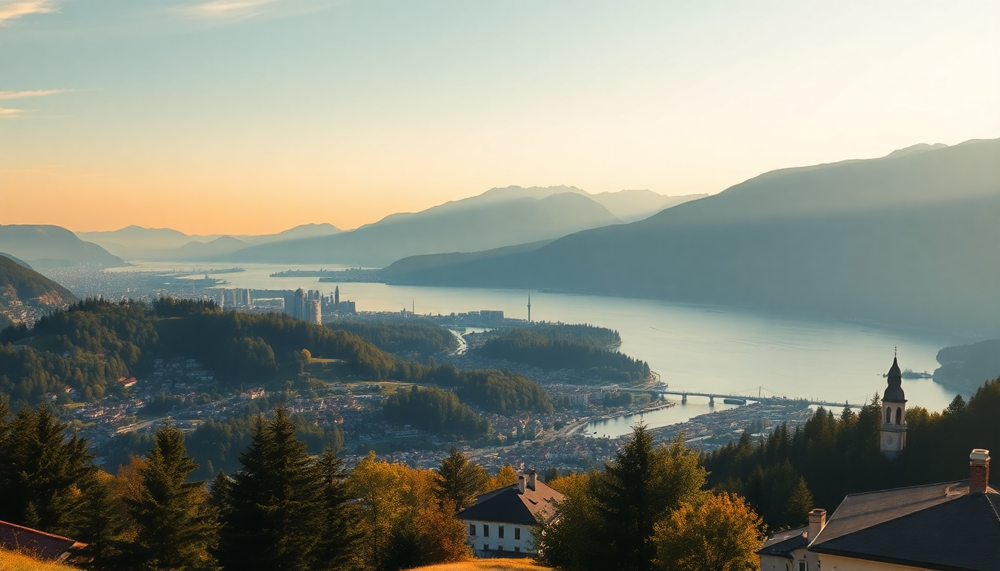

7-Day Switzerland Itinerary: Zurich, Lucerne, Interlaken & Zermatt

I just got back from a week in Switzerland, and I’ll be straight with you: the Swiss Travel Pass is worth every franc if you’re hopping between four towns like we did. We covered Zurich, Lucerne, Interlaken, and Zermatt in seven days, using trains exclusively. No car needed. This itinerary is what we actually did—no filler, no “bucket list” padding. Here’s how to pull it off without blowing your budget or your patience.
How do you get from Zurich to Lucerne?
The train from Zurich HB to Lucerne takes about 45 minutes, and it’s the easiest leg of the whole trip. We left our bags at the Hotel Schweizerhof Zurich—right across from the station—and grabbed a coffee before the short ride. Don’t bother with a first-class ticket for this stretch; second class is fine, and you’ll save CHF 20.
Once in Lucerne, we dropped bags at the Hotel des Balances, which sits right on the Reuss River. The room had a direct view of the Chapel Bridge. A few things to hit in Lucerne:
- Chapel Bridge – It’s the oldest wooden bridge in Europe. Crowded by 10 a.m., so go early.
- Lion Monument – A stone carving in a small park. It’s sad and worth five minutes.
- Old Town (Altstadt) – Wandering the cobblestone squares like Kornmarkt is better than any museum.
- Swiss Transport Museum – Good for a rainy afternoon, but skip if you’re short on time.
We ate at Brasserie Bodu for dinner—solid Swiss-German comfort food, and the rösti was actually crispy, not a grease sponge.
What’s the best way to spend a day in Interlaken?
From Lucerne, take the GoldenPass Express to Interlaken. It’s a 2-hour scenic train ride, and yes, the panoramic windows are worth the surcharge. We booked seats in advance through SBB’s app. Arriving at Interlaken Ost, we walked five minutes to the Hotel Interlaken, a historic property with a garden that feels like a quiet escape from the tourist strip.
Interlaken itself is a launching pad for the Jungfrau region. We skipped the Jungfraujoch trip (CHF 210 per person is robbery) and did this instead:
- Harder Kulm – A funicular from Interlaken. The top platform gives you a 360° view of the Eiger, Mönch, and Jungfrau. We went at sunset and had the place half to ourselves.
- Lake Brienz – A 20-minute bus ride to the lakeside village of Iseltwald. We swam in the turquoise water. It’s cold but clear.
- Höheweg Promenade – The main street with views of the mountains. Overpriced souvenir shops, but the walk itself is free.
We ate at Hüsi Bierhaus for a casual beer and sausage platter. Not fancy, but the staff didn’t roll their eyes at our American-accented German.
Should you stay overnight in Zermatt or just day trip?
Stay overnight. Zermatt is expensive, but a day trip from Interlaken means you’ll spend four hours on trains just to see the Matterhorn for 90 minutes. We booked two nights at the Hotel Alpenhof, a family-run place a five-minute walk from the train station. Our room had a balcony facing the Matterhorn, and the included breakfast had fresh Bircher muesli and real croissants.
Zermatt is car-free, so everything is walking or electric taxi. Highlights from our time there:
- Gornergrat Railway – This is the one expensive thing you should do. The train climbs to 3,089 meters, and you see the Matterhorn from every angle. Book the 8 a.m. departure to avoid crowds.
- Zermatt Village – Walk the main street (Bahnhofstrasse) for chocolate shops and watch boutiques. Läderach has the best fresh chocolate I’ve ever eaten.
- Riffelsee – A short hike from Riffelberg station. The lake reflects the Matterhorn on calm days. We went at 9 a.m. and had it to ourselves.
- Hinterdorf – The old part of town with traditional wooden barns. Quiet and photogenic.
Dinner at Whymper Stube was a highlight—raclette and fondue done right. The cheese is local, and they don’t rush you out.
How do you get from Zermatt to Zurich?
The direct Glacier Express from Zermatt to Zurich takes about 3.5 hours. We splurged on first class for this one—the larger windows and quieter carriage made a difference. The route goes through the Rhone Valley and past the Matterhorn, so keep your camera out. We arrived at Zurich HB at 2 p.m. and checked into the Hotel Krone Unterstrass, a 10-minute tram ride from the station. It’s cheaper than the Old Town hotels and still clean and quiet.
We spent the afternoon doing a self-guided walk through the Niederdorf district. A few spots we liked:
- Lindenhofplatz – A hilltop square with views over the Old Town and the river. Locals play chess here.
- Kunsthaus Zurich – The art museum. We only did the modern wing (Giacometti, Monet) and it took 90 minutes.
- Bahnhofstrasse – The shopping street. Expensive, but window-shopping is free.
- Frauenmünster Church – The Chagall stained-glass windows are stunning. Entry is CHF 5.
Dinner at Zeughauskeller—a massive beer hall near Paradeplatz. The veal Zürich-style with rösti was the best meal I had in Switzerland. Portions are huge.
What’s the best time of year for this itinerary?
We went in mid-September, and I’d do it again in a heartbeat. The weather was mild (15–20°C), the crowds were thinner than July, and the trains were easy to book. If you want to swim in Lake Brienz or Lucerne, go in July or August. For skiing near Zermatt, come December through March. Just know that December in Zermatt is packed and hotel prices double.
Is the Swiss Travel Pass worth it for this route?
Yes. We bought the 8-day Swiss Travel Pass (CHF 440 per person in second class). It covered all our trains, buses, and boats, plus gave us 50% off the Harder Kulm funicular and Gornergrat Railway. Without it, the Interlaken-to-Zermatt train alone would have been CHF 120. The pass also included free entry to the Swiss Transport Museum in Lucerne. If you’re doing four cities in seven days, it pays for itself.
FAQ
Is Switzerland expensive for a week-long trip? Yes, but you can manage. Our biggest costs were the Swiss Travel Pass (CHF 440) and hotels (about CHF 180 per night for a double room in a mid-range hotel like Hotel Interlaken or Hotel Alpenhof). We ate grocery-store sandwiches for lunch most days—Coop and Migros have fresh bread, cheese, and fruit for under CHF 10. Dinner with a drink at a sit-down restaurant like Whymper Stube runs CHF 40–60 per person. Budget around CHF 1,200–1,500 per person for the week, not counting flights.
Do I need to book trains in advance? For the GoldenPass Express and Glacier Express, yes—book seats at least a week ahead through SBB.ch. Regular intercity trains between Zurich and Lucerne don’t need reservations; just hop on. The Gornergrat Railway also doesn’t require a reservation, but go early to get a window seat on the right side.
Can I skip Zurich and start in Lucerne? If you’re flying into Zurich, it’s easier to start there. But if your flight lands in Geneva, you could swap Zurich for a day in Geneva or Montreux and still do Lucerne, Interlaken, and Zermatt. Just adjust the train route—Geneva to Zermatt is 2.5 hours direct, then Zermatt to Interlaken via the Lötschberg route takes about 2 hours.
Conclusion
- Buy the Swiss Travel Pass before you arrive—it covers all trains, boats, and buses between these four cities.
- Stay overnight in Zermatt to actually see the Matterhorn without rushing.
- Skip Jungfraujoch unless you have cash to burn; Harder Kulm and Gornergrat give you similar views for less.
- Eat lunch at Coop or Migros grocery stores to keep your budget in check.
- Book the GoldenPass Express and Glacier Express seats early—they sell out in high season.